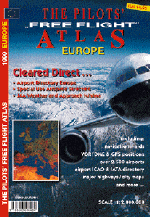

The
Pilot's Free Flight Atlas
Absolute Zero Verlag
getestet von Andre Niedhöfer
Ich kann mich noch gut an meine erste Zeit mit dem FS erinnern.
Noch ohne Internetzugang und damit keine Möglichkeit auf
Flugplanungsprogramme musste ich wohl oder übel auf den guten alten
Schulatlas zurückgreifen. Mit Lineal und Winkelmesser bewaffnet
ermittelte ich die Eckdaten meiner Flugroute und den ungefähren
Kurs. Nun musste ich "nur noch" die in der Nähe
verfügbaren Funkfrequenzen in der Navigationsdatenbank suchen und
nach einer ganzen Weile :-( hatte ich meine Flugroute erstellt.
Heute, mit den bekannten Programmen geht das ja viel einfacher.
Fast schon eingespielt ist die Berechnung der Route mittels PC. Und
ich konnte mir eigentlich nicht vorstellen, in die oben beschriebene
Zeit zurückzukehren.
Doch die Firma Absolute Zero aus Mönchengladbach hat da einen
netten Atlas auf den Markt gebracht. "The Pilot's Free Flight
Atlas" wurde eigentlich für Piloten entwickelt, um diesen vor
dem Flug oder währenddessen die Navigation zu erleichtern. Doch
auch für uns PC-Piloten läst er sich hervorragend nutzen. Ich bin
sogar der Meinung, dass er mittlerweile durch die Werbung auf
einschlägigen Webseiten bei uns bekannter ist, als bei den
"echten" Piloten.
Auf 51 Seiten werden alle Gebiete Europas sowie der Türkei und
ihrer Anrainer dargestellt. Der Maßstab beträgt dabei 1:2 Mio. und
die Karten sind physisch, d.h. mit Höhenrasterung. Aufgebaut ist
der Atlas wie ein stinknormaler Autoatlas, nur mit dem Unterschied
das hier nicht nur die Hauptverkehrsstraßen, sondern die
Navigationseinrichtungen im Vordergrund stehen. So sind natürlich
jeder große und kleine Flughafen und -platz mit ICAO-Code sowie
VOR-Stationen und Intersections dargestellt. Weiterhin werden
teilweise VOLMET-Frequenzen und GPS-Koordinaten dargestellt. Die
Flughäfen sind nach verschiedenen Gesichtspunkten aufgeschlüsselt.
So kann man anhand des Symbols feststellen, ob es sich um einen
Zivil- oder Militärflughafen handelt, wie lang die einzelnen
Runways ungefähr sind, und ob es sich um eine Gras- oder
Asphaltbahn handelt.
Die VOR-Stationen sind in VOR und VOR/DME eingeteilt. Auch wurden
einzelne Lufträume gekennzeichnet, die z.B. aufgrund
meteorologischer Unberechenbarkeit für den Privatflieger als
gefährlich eingestuft sind (z.B. bestimmte Gebiete über Meeren).
Natürlich wurde wie beim Straßenatlas auch auf
Sehenswürdigkeiten, Nationalparks, Zug- und Fährverbindungen sowie
Straßen Wert gelegt. Teilweise sind diese auch mit GPS-Koordinaten
versehen. Dadurch entwickelt sich der Free Flight Atlas auch zum
universell einsetzbaren Nachschlagewerk fürs fahren oder einfach
nur zum schmökern.

An sich ist der Atlas übersichtlich gestaltet, da man durch
kleine Übersichtskarten am Seitenrand immer weiß, wo man sich
gerade befindet. Doch sucht man nach einer bestimmten Einrichtung,
wird es durch den kleinen Maßstab schwierig , denn die Karten sind
oft überladen mit Namen, Bezeichnungen und Zahlenangaben. Vor allem
wenn man dichtere Gebiete, wie etwa das Ruhrgebiet, aufsucht, ist
das etwas störend. Vielleicht hätte man für diese Regionen einen
größeren Maßstab nehmen sollen. Auf jeder Seite befindet sich
zusätzlich eine Windrose, die als Bezugspunkt für eventuelle
Kursbestimmungen sehr nützlich ist.

Der zweite Teil des Free Flight Atlas ist mehr dem reisenden
Piloten an sich gewidmet. Wie viele Piloten haben sich schon
"spontan" in eine europäische Großstadt begeben, ohne
auch nur einen Plan der Stadt dabei zu haben? Der Free Flight Atlas
verspricht Abhilfe, ist doch der zweite Teil als City Map ausgelegt.
Ganze 41 Haupt- und Großstädte Europas von Amsterdam bis Zürich
sind als halb-, ganz- oder gar doppelseitige Karten abgebildet. Das
es sich dabei um den Stadtkern handelt, versteht sich von selbst.
Doch sollte man über Fremdsprachenkenntnisse verfügen, denn
grundsätzlich sind die Straßen und Bezeichnungen in der
Landessprache dargestellt, also auch in russisch und griechisch.
Positiv ist aber die Darstellung von Hotels, Informationen, Polizei
etc. deren Symbole in der Legende erläutert werden.
 Der
letzte Teil besteht aus 33 Seiten flugbezogenen Informationen.
Dieser "Pilot's Corner" ist wirklich eine hervorragende
Infosammlungen für den (PC-)Piloten. Hier werden noch einmal alle
Flughäfen Europas mit ICAO-Code übersichtlich aufgelistet. Auch
VOLMET-Frequenzen und Wettersymbole sowie Erläuterungen zum
Metar-Report sind zu finden. Für den Allwetter-Piloten gibt es
Vereisungstabellen und Approach-Minima. Grundlegendes Wissen wie das
Morse-Alphabet, Platzrunden, Erklärungen der Tower- und
Runway-Signs etc. wird ebenfalls durch übersichtliche Tabellen und
schöne Abbildungen vermittelt.
Der
letzte Teil besteht aus 33 Seiten flugbezogenen Informationen.
Dieser "Pilot's Corner" ist wirklich eine hervorragende
Infosammlungen für den (PC-)Piloten. Hier werden noch einmal alle
Flughäfen Europas mit ICAO-Code übersichtlich aufgelistet. Auch
VOLMET-Frequenzen und Wettersymbole sowie Erläuterungen zum
Metar-Report sind zu finden. Für den Allwetter-Piloten gibt es
Vereisungstabellen und Approach-Minima. Grundlegendes Wissen wie das
Morse-Alphabet, Platzrunden, Erklärungen der Tower- und
Runway-Signs etc. wird ebenfalls durch übersichtliche Tabellen und
schöne Abbildungen vermittelt.
Fazit: Dieser Free Flight Atlas ist unbeschränkt empfehlenswert.
Durch die 144 Seiten vollgepackt mit Karten und Infos macht das
Fliegen am PC und in der Luft einfach nur Spaß. Außerdem kann man
nun endlich sehen, ob der Scenery-Designer wirklich die
geographischen Merkmale seines Gebietes berücksichtigt hat. Für
nur knapp 30 DM bekommt man das ultimative Nachschlagewerk für den
Piloten in einem tollen Layout. Ergo mein Rat: "Kaufen, Kaufen,
Kaufen!!"
Andre Niedhöfer
haupt-niedhoefer@t-online.de
08. März 2000


{kind=link}
{kind=link}